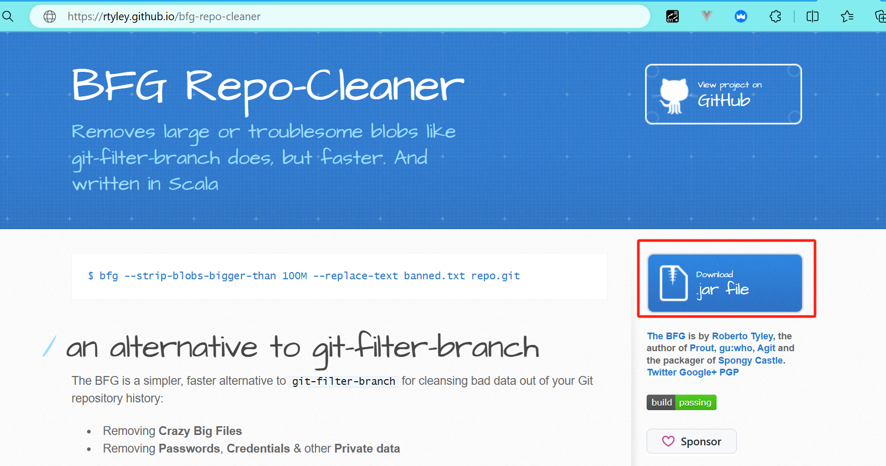
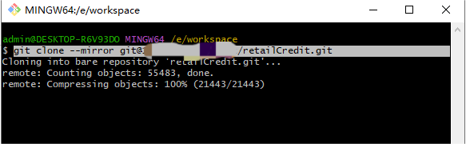
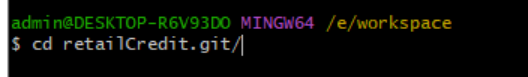
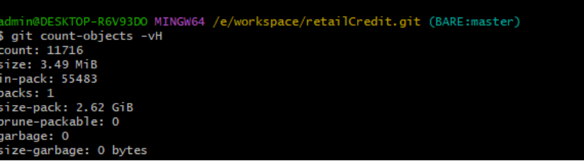
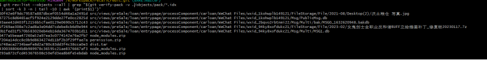
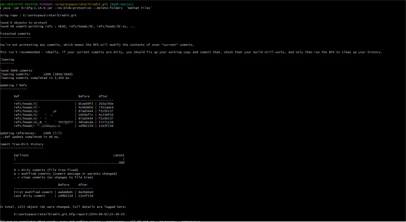
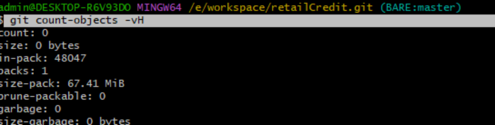
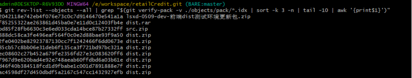

使用BFG清理git历史大文件
本人是后端开发，也会些前端的技术，于是就clone代码，小小代码半天也没有克隆下来，好在最后下载下来了。使用`git count-objects -vH`命令一看，发现有2G多，这是很不正常的。
git自带清除命令，但是比较慢，所以我们使用bfg来进行清理。
bfg下载jar包:https://rtyley.github.io/bfg-repo-cleaner/#download

步骤
1 打开git命令窗口
需要另起文件夹
2 只克隆git相关的文件
git clone --mirror git@127.0.0.1:retailCredit.git

克隆完可以在文件夹中看到名为retailCredit.git的文件夹
cd your_project.git

3 查看大小
git count-objects -vH

可以看到size-pack的大小有2.62G
4 查看大文件
git rev-list --objects --all | grep "$(git verify-pack -v ./objects/pack/*.idx | sort -k 3 -n | tail -10 | awk '{print$1}')"

可以看到有人把自己微信聊天记录传上来了，还有依赖包等和源码无关的东西
5 清理文件
这里可以清理文件或者文件夹，按需清理。如上图，既有文件夹WeChat Files文件夹，还有压缩包
5.1 清理文件夹
注意删除的是目录名称，不是路径名称
java -jar D:\bfg-1.14.0.jar --no-blob-protection --delete-folders 'WeChat Files'

5.2 清理文件
java -jar D:\bfg-1.14.0.jar --no-blob-protection -D node_modules.zip
java -jar D:\bfg-1.14.0.jar --no-blob-protection -D permission.zip
java -jar D:\bfg-1.14.0.jar --no-blob-protection -D dist.tar
6 清理脏数据
git reflog expire --expire=now --all && git gc --prune=now --aggressive
7 再次查看文件大小
git count-objects -vH

本次清理完之后只剩下了67MB了，感觉还是大了，再查询一次发现还是有垃圾文件
git rev-list --objects --all | grep "$(git verify-pack -v ./objects/pack/*.idx | sort -k 3 -n | tail -10 | awk '{print$1}')"

接下来重复步骤4至步骤7即可
8 提交变动
git push -f
提交以后，需要重新克隆项目再进行开发